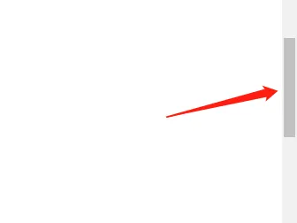
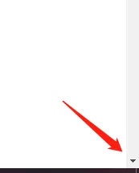
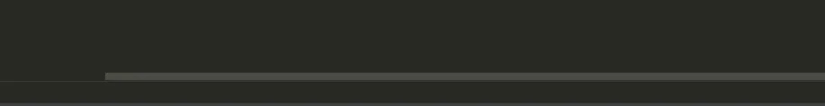

楔子
Python 有很多的库可以实现各种各样的功能，比如使用 pynput 操作你的鼠标和键盘。如果你写过游戏，那么用 pygame 和 pyglet 也可以，只不过它们毕竟是开发游戏的，要只是为了操作鼠标和键盘，用它们就有点小题大做了。
下面来看看 pynput 这个库的用法。
操作鼠标
鼠标的操作无非就这几种：点击按住不放、松开、双击，滑动滚轮，移动鼠标等等。
from pynput.mouse import Button, Controller
# 实例化 Controller 得到一个可以操作鼠标的对象
mouse = Controller()
# mouse.position: 获取当前鼠标位置。
# 屏幕左上角坐标为 (0, 0)，右下角为 (屏幕宽度, 屏幕高度)
print(f"当前鼠标位置: {mouse.position}")
"""
当前鼠标位置: (881, 467)
"""
# 给 mouse.position 赋值等于移动鼠标，这里相当于移动到 (100, 100) 的位置
# 如果坐标小于 0，那么等于 0。如果超出屏幕范围，那么等于最大范围
mouse.position = (100, 100) # 此方法等价于 mouse.move(100, 100)
print(f"当前鼠标位置: {mouse.position}")
"""
当前鼠标位置: (100, 100)
"""
# 按下左键, 同理 Button.right 是右键
mouse.press(Button.left)
# 松开左键
mouse.release(Button.left)
# 上面两行连在一起等于一次单击
# 如果这两行紧接着再重复一次，那么整体会实现双击的效果
# 因为两次单击是连续执行的，没有等待时间。
# 如果中间来一个 time.sleep，那么就变成两次单击了
# 当然鼠标点击我们有更合适的办法，使用 click 函数
# 该函数接收两个参数：点击鼠标的哪个键、以及点击次数
# 这里连续点击两次，等于双击
mouse.click(Button.right, 2)
然后是滑动滚轮，这个需要找张图片来演示。

这种情况我们如果想知道更多内容，需要向下滑动，也就是沿着 y 轴滑动。
from pynput.mouse import Controller
mouse = Controller()
# 垂直方向、沿着 y 轴向下滑动 2 个 step
# 第一个参数针对水平方向，第二个参数针对垂直方向
# 具体的值表示移动的 step 数
mouse.scroll(0, 2)
那么问题来了，什么是 step 呢？

点击一次就会移动一个 step。

同理这个就是在水平方向上移动。
from pynput.mouse import Controller
mouse = Controller()
# 水平方向：大于 0 向右，小于 0 向左
# 垂直方向：大于 0 向下，小于 0 向上
mouse.scroll(3, 0)
可能有人好奇，可不可以水平、垂直两个方向同时移动呢？答案是不可以，因为是模拟人来点击，无非就是效率的问题，所以也要符合常理，而我们平时用鼠标显然不可能两个方向同时移动。
监控鼠标
除了操作鼠标之外，pynput 也支持监控，记录我们做了哪些操作。
from pynput.mouse import Listener, Button
def on_move(x, y):
print(f"鼠标移动到: ({x}, {y})")
def on_click(x, y, button, is_press):
if button == Button.left:
button = "左键"
else:
button = "右键"
if is_press:
operator = "按下"
else:
operator = "松开"
print(f"鼠标{button}在 ({x}, {y}) 处{operator}")
def on_scroll(x, y, dx, dy):
if dx:
print(f"滑轮在 ({x}, {y}) 处向{'右' if dx > 0 else '左'}滑")
else:
print(f"滑轮在 ({x}, {y}) 处向{'下' if dy > 0 else '上'}滑")
with Listener(
on_move=on_move,
on_click=on_click,
on_scroll=on_scroll
) as listener:
listener.join()
"""
鼠标移动到: (783.17578125, 302.7890625)
鼠标移动到: (777.2734375, 302.7890625)
鼠标移动到: (769.5703125, 302.7890625)
鼠标移动到: (758.74609375, 302.7890625)
滑轮在 (111.03515625, 609.31640625) 处向上滑
滑轮在 (111.03515625, 609.31640625) 处向上滑
滑轮在 (111.03515625, 609.31640625) 处向上滑
滑轮在 (111.03515625, 609.31640625) 处向左滑
滑轮在 (111.03515625, 609.31640625) 处向左滑
鼠标左键在 (649.44140625, 448.4765625) 处按下
鼠标左键在 (649.44140625, 448.4765625) 处松开
"""
上面实例化 Listener 时，相当于开启了一个线程，因为 Listener 这个类继承自 Thread。所以我们调用 listener.join() 就相当于阻塞在这里了，会一直监控鼠标事件。
如果回调函数里面返回了 False，那么监听会自动停止。
from pynput.mouse import Listener, Button
def on_click(x, y, button, is_press):
if button == Button.right:
print("点击鼠标右键，监听结束")
returnFalse
if is_press:
operator = "按下"
else:
operator = "松开"
print(f"鼠标左键在 ({x}, {y}) 处{operator}")
with Listener(
on_click=on_click,
) as listener:
listener.join()
"""
鼠标左键在 (28.453125, 610.71484375) 处按下
鼠标左键在 (28.453125, 610.71484375) 处松开
点击鼠标右键，监听结束
"""
当然啦，程序在创建 Listener 的时候，使用的是 with 语句，会一直阻塞在这里。如果不希望它阻塞，还可以这么做。
listener = Listener(
on_move=on_move,
on_click=on_click,
on_scroll=on_scroll)
# 启动子线程开启监听，主线程会继续向下执行
listener.start()
# 如果不想监听了，可以调用 stop 方法结束
listener.stop()
操作键盘
操作键盘也比较简单，无非也是按下某个键、松开某个键，在按下某个键（或者多个）不松开的前提下按下另一个键。
下面来操作一下，方法和操作鼠标比较类似。
from pynput.keyboard import Key, Controller
# 实例化一个可以操作键盘的对象
keyboard = Controller()
# 按下 a 键，小写
keyboard.press("a")
# 松开 a 键
keyboard.release("a")
# 按下 A 键，大写
keyboard.press("A")
# 松开 A 键
keyboard.release("A")
"""
像英文字符、数字等等直接输入相应的字符即可
但如果是 shift、ctrl 等键，那么需要调用 Key 里面属性
"""
# 按下大写键
keyboard.press(Key.caps_lock)
# 松开大写键
keyboard.release(Key.caps_lock)
然后是按住某个键不放的前提下，按下另外的键。
from pynput.keyboard import Key, Controller
keyboard = Controller()
# shift 有两个键，一个是左边的、一个是右边的，此时相当于输入感叹号
with keyboard.pressed(Key.shift_l):
keyboard.press("1")
keyboard.release("1")
# 如果要同时按下多个键，那就输入多个键即可
with keyboard.pressed(Key.shift_l, Key.ctrl_l):
keyboard.press(Key.f10)
监控键盘
监控键盘使用的方法和监控鼠标非常类似，依旧是实例化一个类Listener。
from pynput.keyboard import Key, Listener
def on_press(key):
# 当按下esc，结束监听
if key == Key.esc:
print(f"你按下了 esc，监听结束")
returnFalse
print(f"你按下了 {key} 键")
def on_release(key):
print(f"你松开了 {key} 键")
with Listener(
on_press=on_press,
on_release=on_release
) as listener:
listener.join()
"""
你按下了 'a' 键
你松开了 'a' 键
你按下了 Key.backspace 键
你松开了 Key.backspace 键
你按下了 Key.shift 键
你松开了 Key.shift 键
你按下了 'c' 键
你松开了 'c' 键
你按下了 Key.enter 键
你松开了 Key.enter 键
你按下了 esc，监听结束
"""
以上就是这个模块的基本内容，具体怎么使用由你自己决定。另外这个模块在 Linux 上也是可以运行的，但前提是必须有显示器。